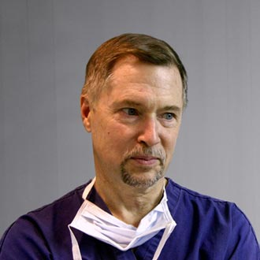

In an area full of Plastic Surgeons (and people who call themselves Plastic Surgeons), this practice distinguishes itself by personal service, extensive experience, and a commitment to thorough postoperative care.
Because a patient's safety and satisfaction after surgery is our measure of success, a thorough and honest pre-op evaluation is a hallmark of this practice. This means time spent, questions answered, alternative options investigated, and likely outcomes truthfully represented—whether for closure of a skin cancer defect or for a cosmetic liposuction:
We have been in practice long enough to be experienced, yet you will not feel like you've been put on an assembly line. There are also unassailable credentials, training at top-notch centers, a pleasant office surrounding, and personal attention to your needs. A brief biography and a more extensive curriculum vitae are available. The Plastic Surgery practice features: